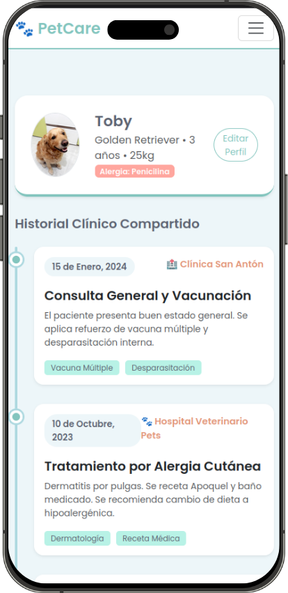
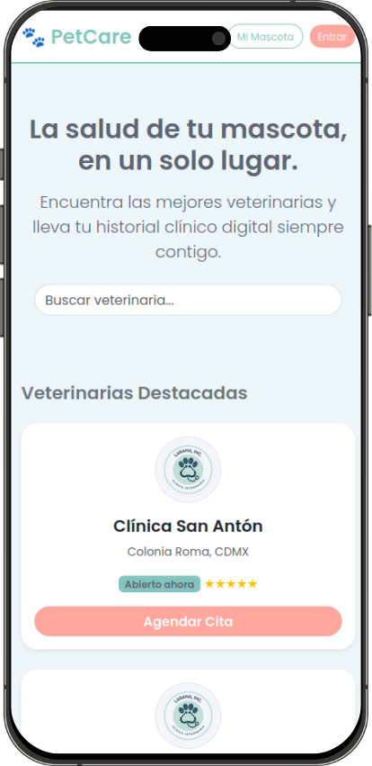
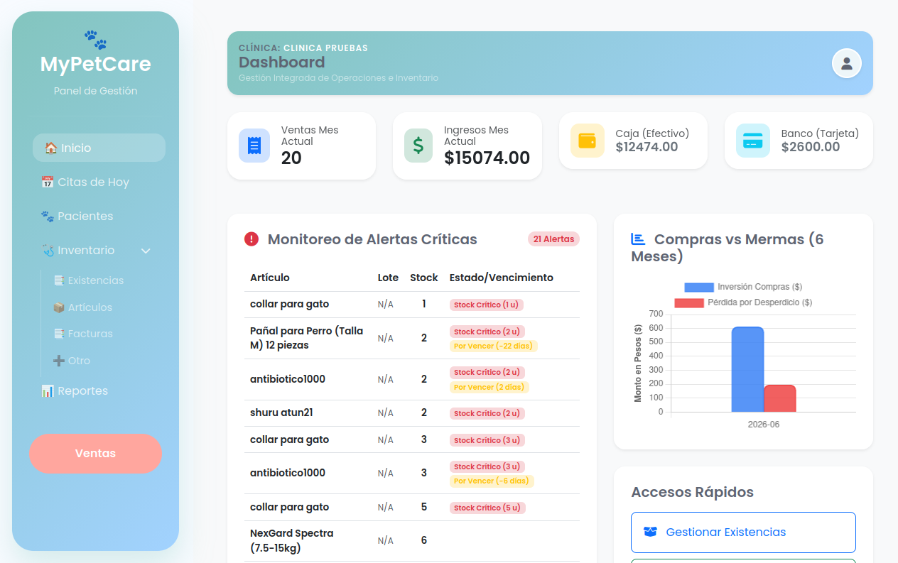
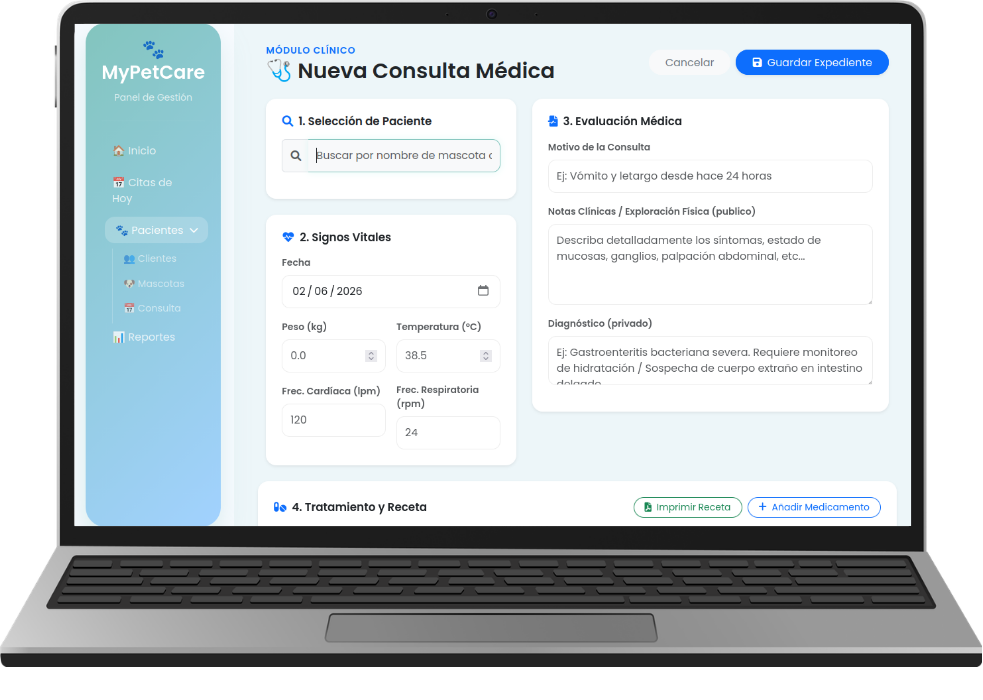
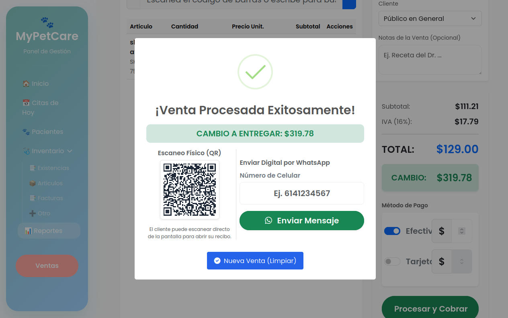
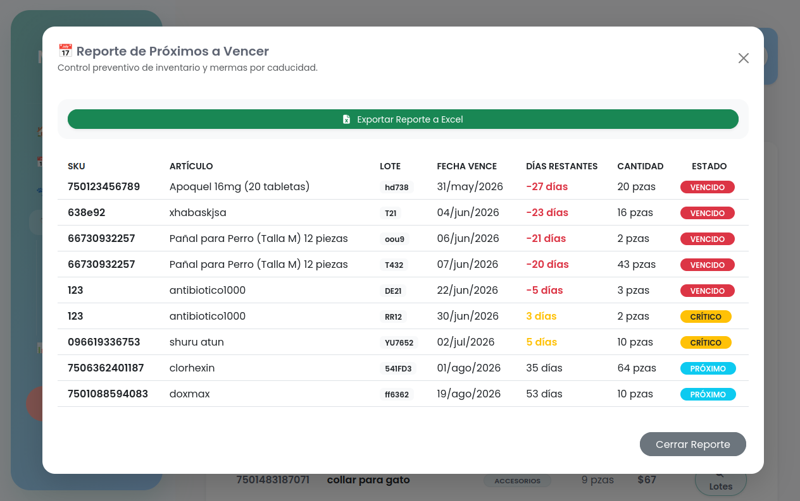
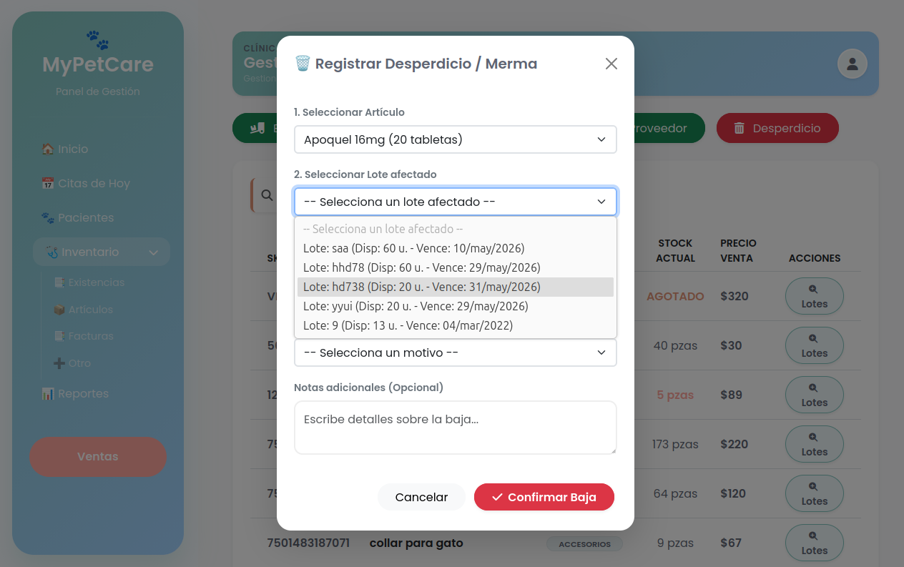
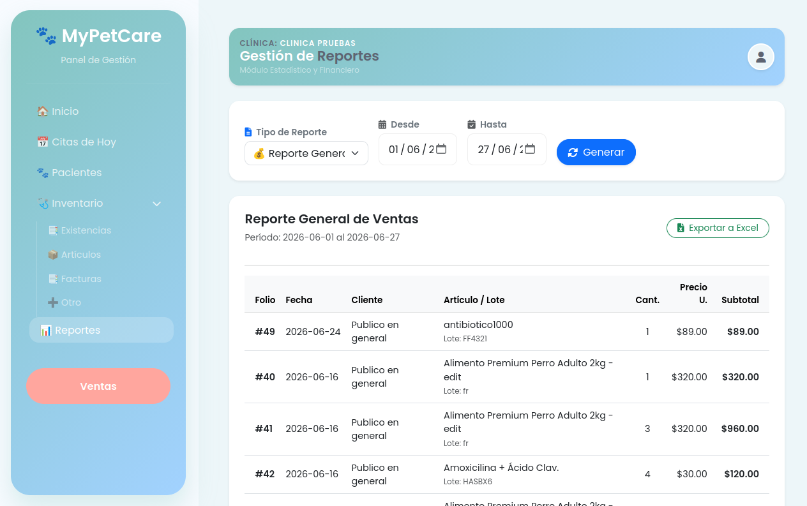

Elige tu perfil para descubrir cómo MyPetCare mejora tu experiencia.


Lleva el carnet médico, vacunas y recordatorios de tu mascota siempre contigo. Encuentra veterinarias, agenda citas y recibe notificaciones en tiempo real.
Toma decisiones basadas en datos. Visualiza ventas diarias, inventario crítico y métricas de desempeño desde un panel intuitivo y centralizado.


Todo el historial clínico de tus pacientes en la nube. Accede rápidamente a consultas previas, alergias y datos clave, ya sea desde el escritorio o tu móvil.
Gestión de Consultas: Registra notas clínicas, signos vitales y evolución del paciente en cada visita.
Recetas Profesionales: Genera recetas digitales personalizadas al instante y envíalas directamente a los dueños.
"Desde la consulta hasta la prescripción, MyPetCare integra todo el flujo clínico para una atención médica más eficiente."

Convierte datos en decisiones. Visualiza el flujo de ventas, los productos con mayor rotación y el historial de uso. Además, moderniza la atención al cliente con procesos de cobro digital eficientes.
Envía el recibo de compra instantáneamente al teléfono de tus clientes.
Genera un QR único en pantalla para que el dueño escanee y descargue su comprobante.
Evita pérdidas innecesarias. Gestiona tus productos, monitorea fechas de caducidad y recibe alertas automáticas para reabastecimiento.
Reportes claros para una gestión sin desperdicios.


Nuestro sistema rastrea cada insumo desde que entra hasta que se aplica. Recibe alertas inteligentes antes de que tus medicamentos o materiales expiren, permitiéndote tomar medidas preventivas para evitar desperdicios y optimizar la rentabilidad de tu veterinaria.

Convierte datos en decisiones. Visualiza el flujo de ventas, los productos con mayor rotación y el historial de uso en tus consultas. Tendrás un panorama claro del rendimiento de tu negocio día a día.
Todo lo que necesitas saber sobre MyPetCare
No, las funciones básicas de registro de mascotas, recordatorios de vacunas y búsqueda de veterinarias serán gratuitas para siempre para los dueños de mascotas.
¡Claro! MyPetCare está diseñado para convivir con tus sistemas actuales. Puedes usarlo exclusivamente para mejorar la comunicación con tus clientes y digitalizar el historial que compartes con ellos.
La seguridad es nuestra prioridad. Usamos cifrado de extremo a extremo y servidores de alta seguridad para asegurar que solo tú y los veterinarios autorizados tengan acceso a los expedientes.
Actualmente estamos en fase de desarrollo. Al unirte a la lista de espera, recibirás una notificación exclusiva para ser de los primeros en probar la versión Beta y obtener beneficios premium.